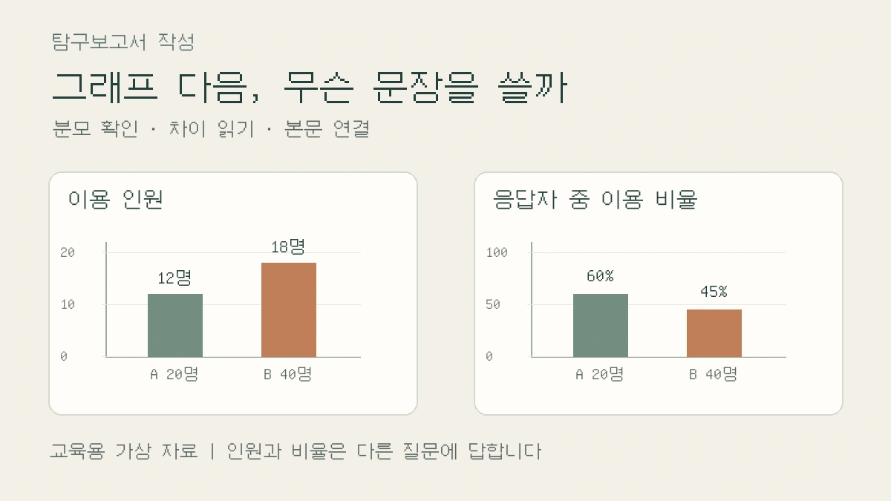

표·그래프를 넣은 뒤 본문은 어떻게 쓸까? 숫자와 해석을 연결하는 법
그래프 뒤에 “차이가 났다”만 남았다면, 질문·지표·분모를 다시 맞춰 보세요. 가상 도서관 자료로 인원과 비율의 차이, 수정 전후 문단, 그림–본문 연결 메모를 안내합니다.

그래프를 넣고 “위 그래프와 같은 결과가 나왔다”라고 썼습니다. 표에는 숫자가 빼곡한데, 본문에 덧붙일 말은 떠오르지 않습니다. 숫자를 전부 문장으로 옮겨야 하는지, 보이는 차이를 원인으로 설명해도 되는지 헷갈릴 수 있습니다.
이번 글은 표·그래프 하나를 독자가 읽을 수 있는 본문 한 문단으로 연결하는 방법을 다룹니다. 여러 문헌을 종합하거나 예상과 다른 결과를 해석하는 단계보다 좁은 수정 작업입니다. 자신의 초안에서 표나 그림 하나를 고르고, 그것으로 답하려던 질문을 옆에 적어 보세요. 아래 절차는 편집팀의 작성 제안이며 학교의 공통 채점 기준이 아닙니다. 과제에서 요구한 양식과 자료 사용 조건을 먼저 확인하세요.
그림을 넣기 전에, 비교할 것을 한 문장으로 정하세요
“도서관 이용을 알아본다”는 목적만으로는 어떤 그래프를 그릴지 정하기 어렵습니다. “두 집단에서 지난 일주일간 한 번 이상 이용했다고 응답한 사람의 비율이 다른가?”로 좁히면 대상·기간·지표가 드러납니다. 반면 운영 인력을 계획하려는 질문이라면 비율보다 이용 인원이나 방문 횟수가 필요할 수도 있습니다. 한 사람이 여러 번 방문한 횟수와 이용자 수도 구분하세요.
Purdue OWL의 표·그림 안내는 본문에서 사용한 표와 그림을 가리키고, 독자가 살펴야 할 핵심을 설명하도록 권합니다.[1] 여기서 학교 보고서에 적용할 점은 ‘그래프를 붙였으니 설명을 끝낸다’가 아니라, 그림에서 읽은 차이가 내 질문에 어떤 답을 주는지 쓴다는 것입니다.
처음부터 새 자료를 찾을 필요는 없습니다. 자신이 실제로 정리한 집계표가 있다면 원기록과 대조하세요. 문헌 탐구라면 사용한 통계의 발행기관 페이지를 열어 ‘통계표·원자료·조사 개요’ 항목을 찾고, 검색창에 지표명과 ‘정의’ 또는 ‘조사 대상’을 함께 넣어 봅니다. 표 아래 주석을 펼쳐 분모, 조사 기간, 제외 대상을 확인한 뒤 파일명·표 번호·확인 날짜를 메모합니다. 기사 속 그림만으로 그 조건을 알 수 없다면 원자료를 추적하고, 찾지 못한 조건은 미확인으로 남깁니다.
가상 자료: B의 막대가 더 높아도 이용 비율은 낮을 수 있습니다
그림 1은 편집팀이 만든 교육용 가상 자료입니다. 실제 학교 설문이나 학생의 수행 결과가 아닙니다. 같은 문항으로 두 집단에 지난 일주일간 도서관을 한 번 이상 이용했는지 물었고, 집단별 응답자는 모두 해당 문항에 답했다고 가정합니다. 집계 내용은 다음과 같습니다.
- A 집단: 응답자 20명 중 이용 응답 12명, 미이용 응답 8명. 이용 응답 비율은 12÷20×100=60%입니다.
- B 집단: 응답자 40명 중 이용 응답 18명, 미이용 응답 22명. 이용 응답 비율은 18÷40×100=45%입니다.
B의 이용 응답 인원은 A보다 6명 많지만, 응답자 중 이용 비율은 A가 B보다 15%포인트 높습니다. 영국 통계청(ONS)은 백분율 사이의 차이를 퍼센트포인트로 구분합니다.[2] 여기서는 60−45=15이므로 ‘15%포인트 차이’라고 씁니다. 두 집단을 비교한 자료이므로 이를 시간에 따른 ‘15%포인트 증가’라고 쓰지는 않습니다.
두 결과는 모순이 아닙니다. 왼쪽 그래프는 이용 응답 인원, 오른쪽은 각 집단 응답자를 분모로 한 비율입니다. 그림 1에서 두 그래프의 세로축 단위와 눈금이 다른 이유도 여기에 있습니다. 각 그래프 안에서 A와 B를 비교해야 합니다. 인원이 더 많다는 관찰을 ‘이용 성향이 더 강하다’는 결론으로 바꾸려면 지금 질문과 지표가 맞는지 다시 봐야 합니다.
실제 설문에서는 응답하지 않은 사람을 자동으로 미이용자로 넣지 마세요. ‘전체 집단 구성원 중 이용자’와 ‘문항 응답자 중 이용 응답자’도 다릅니다. 모집단 크기나 무응답 처리가 확인되지 않았다면, 이 예시처럼 응답자 중 비율이라는 범위를 문장에 남깁니다.
수정 전후: “차이가 났다” 뒤에 무엇을 덧붙일까요?
수정 전 가상 문단
그림 1에서 B가 A보다 높았다. B 학생들이 도서관을 더 좋아하기 때문이다. 따라서 B의 운영 방식을 다른 집단에도 적용해야 한다.
‘높다’의 대상이 인원인지 비율인지 빠졌고, 묻지 않은 선호를 이유로 붙였습니다. 운영 방식에 관한 자료도 없습니다. 그래프만으로 뒷받침할 수 있는 문장부터 남겨 봅니다.
수정 후 가상 문단
그림 1의 이용 인원 그래프에서 B의 이용 응답자는 18명으로 A의 12명보다 6명 많았다. 그러나 응답자 수를 분모로 비교하면 A는 60%, B는 45%로 A가 15%포인트 높았다. 따라서 응답자 중 이용 비율을 묻는 이번 질문에는 인원만으로 비교하지 않고 비율을 함께 제시했다. 집단의 구성과 응답자 선정 과정은 확인하지 못했으므로, 이 차이를 도서관 선호나 운영 방식의 효과로 설명할 수는 없다.
이 문단에는 숫자를 모두 옮기지 않았습니다. 어느 그림의 어떤 지표인지 밝히고, 질문에 필요한 차이와 비교 기준을 적은 뒤, 그 자료로 설명하지 못하는 범위를 닫았습니다. 학교 양식이 결과와 논의를 나누도록 요구한다면 앞의 관찰·계산 문장은 결과에, 비교 기준을 택한 이유와 해석의 제한은 논의에 배치하세요.
제목·주석·본문이 같은 지표를 말하는지 확인하세요
그림 제목을 ‘도서관 만족도’로 붙여 놓고 축에는 이용자 수를 표시하면 본문을 잘 써도 독자가 다른 결과로 읽습니다. 제목은 ‘가상 A·B 집단의 지난 일주일 이용 응답 인원’처럼 무엇을 집계했는지 밝혀 보세요. 비율 그림에는 분모가 집단별 문항 응답자라는 주석이 필요합니다. 만족도는 이 가상 사례에서 측정하지 않았습니다.
Purdue OWL은 표·그림을 본문 없이 보아도 이해할 수 있도록 약어 등의 설명을 갖추고, 본문과 용어·번호를 일관되게 쓰도록 안내합니다.[1] 이를 점검할 때는 보고서에서 같은 지표를 ‘이용률’, ‘방문율’, ‘만족도’로 바꾸어 부르지 않았는지 검색해 보세요. 정확한 값이 필요한 표에는 단위와 분모를, 패턴을 보여 주려는 그래프에는 축·범례·기간을 먼저 확인합니다. 숫자 두 개만 비교한다면 문장만으로 충분할 수도 있습니다. 분량을 늘리려고 같은 자료를 표와 그래프에 반복할 필요는 없습니다.
다른 자료의 수치를 골라 다시 그렸다면 발행기관·문서명·원표 위치와 선택한 항목, 계산식을 남기세요. ‘직접 작성’은 그림을 그렸다는 뜻이지 원자료까지 직접 수집했다는 뜻이 아닙니다. 타인의 그림을 그대로 사용할 때의 이용 허락과 출처 표기는 별도로 확인해야 합니다. 확인하지 않은 자료나 빠진 값을 임의로 채우지 않습니다.
오늘 남길 작은 산출물: 그림 하나와 연결 문단 하나
자기 보고서에서 그림 하나만 골라 아래 메모를 채우세요. 빈칸을 채울 근거가 없으면 문장을 매끈하게 만드는 대신 그 조건부터 다시 확인합니다.
- 이 그림으로 답할 질문: ___.
- 실제 자료와 수행 범위: 직접 측정 / 문헌의 자료 재분석 / 아직 수행하지 않은 계획 중 ___.
- 제목·번호와 지표 정의: ___, 단위 ___, 분모 ___, 대상과 기간 ___.
- 원기록 또는 출처 위치와 처리: ___, 제외·무응답 처리 ___, 계산식 ___.
- 본문에 남길 차이: ___와 ___를 비교하면 ___이다.
- 그 차이가 질문에 주는 답과 아직 설명하지 못하는 점: ___.
이 메모를 바탕으로 “그림 ___에서 ___는 ___였다. ___를 기준으로 비교하면 ___라는 차이가 있다. 이는 이번 질문에 대해 ___까지 말해 준다. 다만 ___는 확인하지 못했다”를 연습 틀로 삼을 수 있습니다. 원인이 확인되지 않았다면 마지막 문장을 그럴듯한 원인으로 채우지 마세요. 아직 계획만 세웠다면 관측 문단 대신 ‘어떤 자료를 어떻게 비교할 계획인지’를 미래형으로 씁니다.
마지막으로 본문의 숫자가 원기록과 일치하는지, 집단 간 차이를 전후 변화라고 쓰지 않았는지, 응답자를 전체 학생으로 넓히지 않았는지 확인하세요. 이 점검표는 학생이 자신의 글을 고치는 도구입니다. 교사 기록용 세특 문장이 아니며 성적·입시 결과·검색 노출을 보장하지 않습니다.
함께 읽을 글과 참고자료
전체 구성은 탐구보고서 대표 작성 가이드에서 확인하세요. 이번 글이 표·그림과 한 문단의 연결을 다룬다면, 요약을 분석으로 바꾸는 세 질문은 여러 자료의 관계를 정리할 때, 예상과 다른 결과의 해석·결론 쓰기는 원래 예측과 관측을 대조할 때 이어서 활용할 수 있습니다.
2026년 11월 5일 아래 원문을 직접 확인했습니다. 표·그림의 설명 원칙과 퍼센트포인트 정의만 참고했으며, 도서관 자료·그림·수정 문장·점검 메모는 편집팀이 만든 독립적인 교육 예시입니다. 실제 조사를 수행했다는 뜻이 아닙니다.
- Purdue OWL — Tables and Figures: ‘Relation of Tables or Figures and Text’, ‘Integrity and Independence’, ‘Organization, Consistency, and Coherence’ 항목. APA 형식을 한국 고교의 의무 양식으로 제시하지 않았습니다.
- Office for National Statistics — Percentages and percentage points: 백분율 사이 차이의 단위 확인.
이 칼럼은 운영자의 관점과 일반 교육 정보를 담고 있으며 특정 대학 합격이나 평가 결과를 보장하지 않습니다.
함께 볼 글
탐구보고서 처음 쓰는 법: 질문·자료·분석·결론을 연결하는 실전 예시NEW
가상 공지 네 개를 비교하며 관찰과 해석, 결론의 한계를 구분하고 보고서 한 편으로 묶습니다.
탐구보고서 자기점검 루브릭: 질문·방법·근거·한계로 고쳐 쓰기NEW
대학의 공식 평가표가 아닌 사이트 자체 자기점검 기준으로, 보고서의 빈칸을 찾고 수정 우선순위를 정합니다.